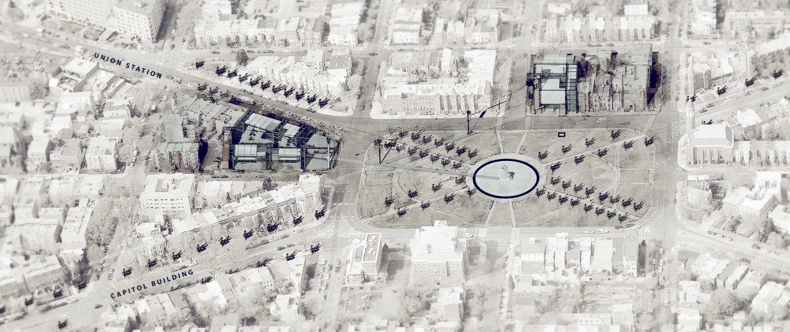
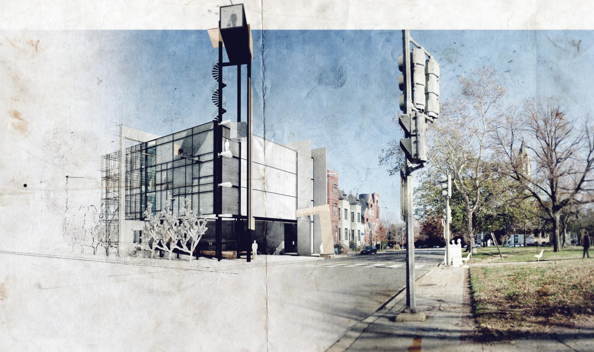

(Click images to zoom. Click circle to return to top.)

This building is an attempt to learn from L’Enfant’s system of avenues and alleyways in service of the perception of space through light.

The interplay of massive concrete shear walls with metal framing and delicately-placed chairs is intended to evoke an analogous experience:
one of contrast and movement between spaces, and one where the ephemeral turns out to be more interesting than the thing framed in the first place.
one of contrast and movement between spaces, and one where the ephemeral turns out to be more interesting than the thing framed in the first place.